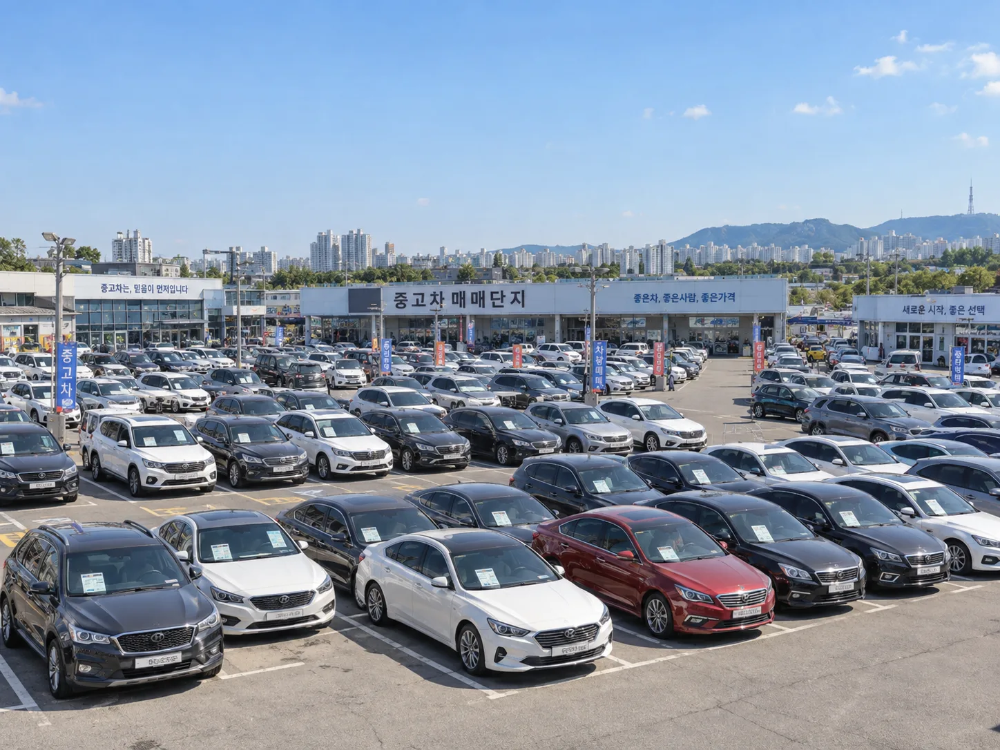
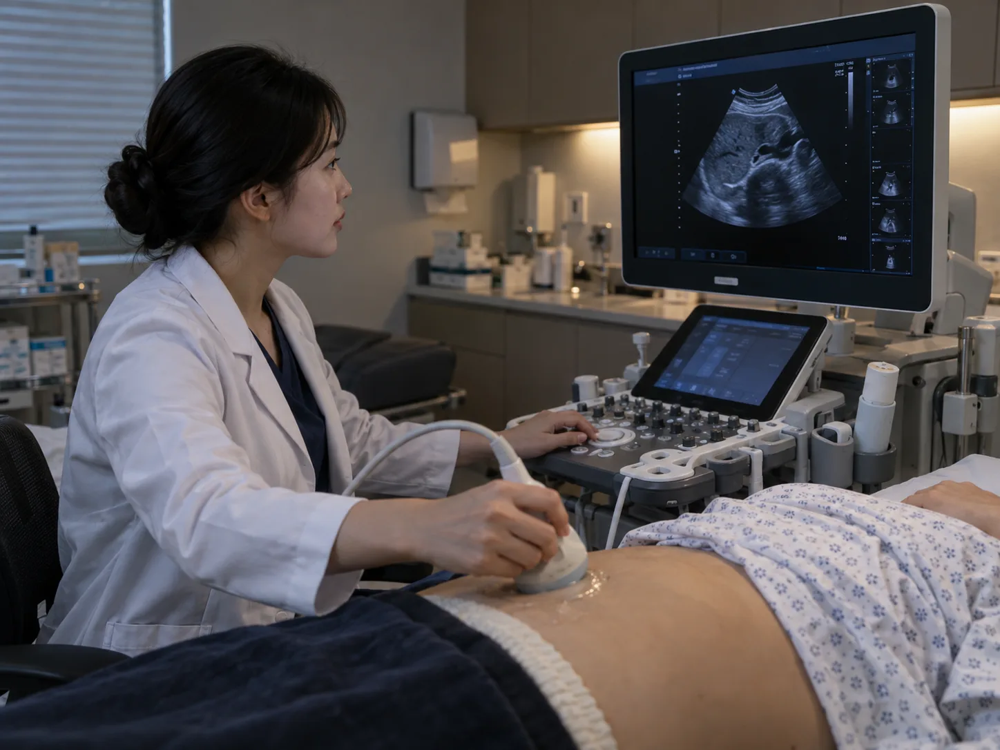

▲ 중고차 딜러 대다수는 4대보험에 가입되지 않은 프리랜서 신분이라 정기 건강검진을 스스로 챙기기 쉽지 않다 ⓒ CarPrism (AI 생성 이미지)
중고차 딜러는 대부분 특정 회사에 소속된 직장인이 아니다. 매매단지 안에서 각자 사업자 형태로 활동하는 독립 딜러가 많고, 이 때문에 일반 직장인이라면 당연히 받는 회사 건강검진 대상에서도 빠지는 경우가 흔하다.
중고차 거래 플랫폼 헤이딜러가 22일 밝힌 내용에 따르면, 회원 딜러를 위한 건강검진 복지 '딜러케어'의 누적 지원 인원이 1,900여 명, 누적 지원 규모는 3억3,000만 원을 넘어섰다. 그리고 올해부터는 이 혜택이 딜러 본인의 가족에게까지 넓어졌다.
1. 무엇이 달라졌나 — 딜러케어, 가족까지 넓히다
헤이딜러가 이번에 발표한 것은 새 제도의 신설이 아니라 기존 복지 제도의 '적용 범위 확대'다. 딜러케어는 2022년 중고차 업계 최초로 도입된 회원 딜러 대상 건강검진 지원 제도로, 그간 딜러 본인에 한해 검진 비용을 지원해왔다.
| 구분 | 지원 대상 |
|---|---|
| 기존(2022~2025) | 헤이딜러 회원 딜러 본인만 지원 |
| 2026년 확대 | 회원 딜러 본인 + 부모·형제자매·배우자 중 1인 지정, 동일한 검진 패키지 제공 |
헤이딜러 측은 가족으로 지정된 1인 역시 딜러 본인과 동일한 구성의 검진을 받으며, 기본 패키지 비용은 이번에도 회사가 전액 부담한다고 설명했다.

▲ 전국 중고차매매단지에서 독립적으로 활동하는 딜러들은 대부분 특정 회사 소속 직장인이 아니다 ⓒ CarPrism (AI 생성 이미지)
2. 왜 이런 복지가 필요했나 — 4대보험 사각지대
딜러케어가 처음 등장한 배경은 단순한 '복지 확대' 차원이 아니다. 중고차 딜러 상당수는 매매단지 안에서 개별 사업자 또는 프리랜서 형태로 활동하며, 특정 회사에 고용된 근로자가 아닌 경우가 많다. 이 때문에 4대보험에 가입돼 있지 않은 딜러가 적지 않고, 일반 직장인이라면 회사를 통해 받는 국가건강검진 등의 혜택에서도 벗어나 있는 경우가 흔하다.
📍 '독립적으로 일한다'는 것의 이면
중고차 딜러는 매매단지나 지역 사무실을 거점으로 활동하며, 실적에 따라 수입이 크게 좌우되는 업종 특성상 건강관리를 후순위로 미루기 쉬운 구조에 놓여 있다. 헤이딜러는 이런 문제의식에서 2022년 업계 최초로 회원 딜러를 위한 건강검진 복지 제도를 도입했다고 설명한다.
실제로 딜러케어 도입 이후 지원 규모는 꾸준히 늘어왔다. 2024년 10월 기준 누적 지원금이 2억 원, 지원 인원이 1,000명을 넘어섰다고 발표된 바 있으며, 이번 발표에서는 누적 인원 1,900여 명, 누적 지원금 3억3,000만 원으로 늘었다.
3. 딜러케어, 실제로 무엇을 지원하나
딜러케어의 핵심은 '위내시경을 포함한 종합 건강검진'이다. 회원 딜러는 전국 40여 개 협약 병원·검진기관 가운데 편한 곳을 골라 검진을 받을 수 있고, 기본 패키지 비용은 헤이딜러가 전액 부담한다.
✅ 딜러케어 지원 내용 요약
· 검진 항목: 위내시경, 초음파 검사 등을 포함한 종합 건강검진(약 20만 원 상당)
· 이용 기관: 전국 40여 개 협약 병원·검진기관 중 선택 가능
· 비용: 기본 검진 패키지는 헤이딜러가 전액 부담
· 2026년 확대분: 부모·형제자매·배우자 중 1인까지 동일 혜택 적용
· 누적 실적: 지원 인원 약 1,900명, 누적 지원금 약 3억3,000만 원

▲ 딜러케어의 기본 검진 패키지에는 위내시경과 초음파 검사 등이 포함된다 ⓒ CarPrism (AI 생성 이미지)
이번 발표와 관련한 오토트리뷴의 원문 기사는 아래에서 확인할 수 있다. 오토트리뷴 원문 기사 바로가기
4. 중고차 딜러라는 직업, 건강엔 어떤 영향이 있나
중고차 딜러는 사무실과 야외 매매단지를 오가며 하루 대부분을 보낸다. 고객 응대, 차량 상태 확인, 시세 조사, 계약 협상까지 업무 강도가 높고, 실적에 따라 수입이 좌우되는 구조라 심리적 압박도 상당하다는 것이 업계의 공통된 설명이다.
| 요인 | 내용 |
|---|---|
| 고용 형태 | 다수가 개별 사업자·프리랜서 — 4대보험 미가입인 경우가 흔함 |
| 근무 장소 | 야외 매매단지와 사무실을 오가는 이동이 많은 근무 |
| 소득 구조 | 실적(판매·중개 성사) 기반 — 수입 변동성이 크고 심리적 압박 상존 |
| 건강관리 여건 | 회사 소속 건강검진 대상에서 제외되는 경우가 많아 정기검진이 후순위로 밀리기 쉬움 |
▲ 실적에 따라 수입이 좌우되는 업무 구조는 딜러들의 건강관리를 뒷전으로 미루게 만드는 요인으로 꼽힌다 ⓒ CarPrism (AI 생성 이미지)
📍 '건강검진 사각지대'는 중고차 업계만의 문제가 아니다
특수형태근로종사자(특고)·프리랜서 신분으로 일하는 노동자는 중고차 딜러 외에도 학습지 교사, 대리운전 기사, 배달 라이더 등 다양한 업종에 존재한다. 이들은 대부분 국민건강보험 지역가입자로 분류돼 회사가 제공하는 일반건강검진 대상에서 빠지는 경우가 많다. 업계 차원의 자율적 복지가 이런 제도적 공백을 메우는 사례로 주목받는 이유다.
5. 왜 지금, 이런 복지 경쟁이 나타나나
중고차 매매 플랫폼 업계는 최근 몇 년 사이 딜러 유치·이탈 방지 경쟁이 치열해졌다. 플랫폼을 통해 거래되는 매물이 늘어날수록 우수한 딜러를 얼마나 많이, 오래 확보하느냐가 플랫폼 경쟁력과 직결되기 때문이다.
딜러케어와 같은 복지 제도는 딜러 개인의 건강 문제를 지원하는 동시에, 플랫폼에 대한 소속감과 신뢰를 높이는 수단으로도 작동한다. 헤이딜러 관계자는 앞서 “많은 딜러들이 딜러케어를 긍정적으로 평가하고 있으며, 앞으로 지원 범위를 더 넓혀갈 것”이라는 취지로 밝힌 바 있다.
✅ 딜러케어가 갖는 의미
· 4대보험 사각지대에 있는 프리랜서 딜러의 건강권을 민간 차원에서 보완
· 검진 지원을 가족까지 확대해 딜러의 실질적 생활 부담을 완화
· 플랫폼 입장에서는 딜러 이탈 방지·소속감 강화 효과도 기대
· 업계 전반으로 유사한 복지 확산 시 특고·프리랜서 건강검진 사각지대 해소에도 참고 사례가 될 수 있음
6. 요약
헤이딜러의 딜러케어는 2022년 업계 최초로 도입된 중고차 딜러 대상 건강검진 지원 제도로, 현재까지 누적 1,900여 명·3억3,000만 원 규모로 운영돼 왔다. 위내시경·초음파 검사를 포함한 약 20만 원 상당의 종합 검진을 전국 40여 개 협약 병원에서 무료로 받을 수 있는 것이 핵심이다.
2026년부터는 이 혜택이 딜러 본인을 넘어 부모·형제자매·배우자 중 1인까지 확대됐다. 다수의 중고차 딜러가 4대보험 미가입 프리랜서 신분으로 일하며 회사 건강검진 등 제도권 복지의 사각지대에 있었다는 점을 고려하면, 이번 확대는 단순한 복지 강화를 넘어 업계 특유의 건강관리 공백을 메우려는 시도로 볼 수 있다.
비슷한 고용 형태에 놓인 특고·프리랜서 업종 전반에서도 이런 민간 복지 모델이 참고 사례가 될 수 있을지 주목된다.